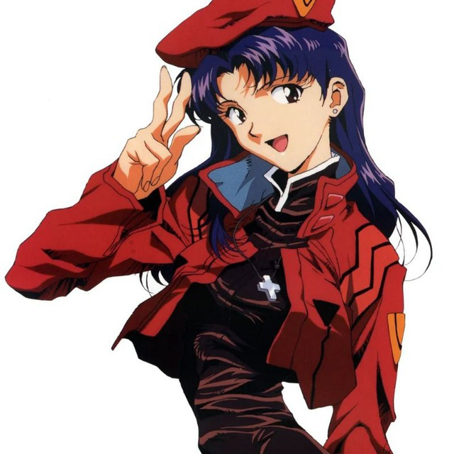
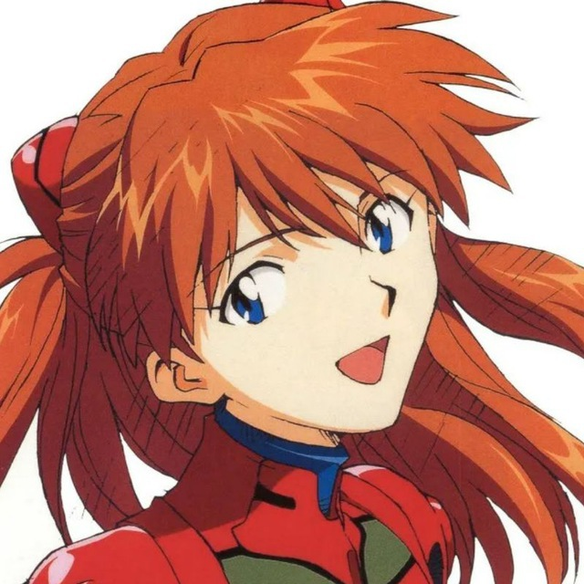

Personnel Files
캐릭터

카츠라기 미사토 Misato Katsuragi Operations Director 출연 55화 · 최근 EP.176 아야나미 레이
Rei Ayanami
Knowledge Steward
출연 57화 · 최근 EP.187
아야나미 레이
Rei Ayanami
Knowledge Steward
출연 57화 · 최근 EP.187

소류 아스카 랑그레이 Asuka Langley Soryu Quality Critic 출연 58화 · 최근 EP.186 나기사 카오루 Kaoru Nagisa Discovery Oracle 출연 52화 · 최근 EP.188 마키나미 마리
Mari Makinami
Creative Scribe
출연 44화 · 최근 EP.188
이카리 신지
Shinji Ikari
Pedagogy Guide
출연 47화 · 최근 EP.180
마키나미 마리
Mari Makinami
Creative Scribe
출연 44화 · 최근 EP.188
이카리 신지
Shinji Ikari
Pedagogy Guide
출연 47화 · 최근 EP.180